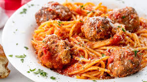

Spaghetti

It's hard to go wrong with spaghetti and meatballs. It's cheap, fast, and easy to make. Only problem is you may eat it to much. Spaghetti is typically made with spaghetti noodles, hence the name. You can replace the noodles with any one of you're choosing but I prefer the classic. You can also swap meatballs out with ground beef to make meat sauce, which is also great. Lucky for us either way the steps to make are the same!
Ingredients
- Spaghetti Noodles
- Tomato Sauce
- Meatballs (or ground beef for meat sauce)
Steps
- Boil water in a large pot and add noodles when boiling.
- Cook meatballs (or ground beef) in pan on medium-high heat, drain grease
- Set pan heat to simmer and add sauce. Check noodles, they should be soft and you can taste one as well. They cook for approx 12 minutes
- Once noodles are done, strain in sink and all contents back to pot.
- Leave on simmer to keep warm or turn off stove. The spaghetti is now ready to be served.